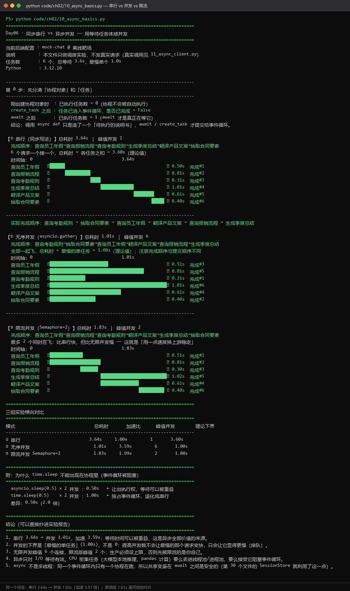

D06
Day 06｜异步编程与多供应商协议
2.1.1 当日目标
学生先理解“等待网络时让出执行权”，再写并发。验收不是只看速度，而是能解释事件循环、协程、任务、并发限制和异常隔离。
2.1.2 用等待任务体感并发
import asyncio
from time import perf_counter
async def simulated_request(name: str, seconds: float) -> str:
await asyncio.sleep(seconds)
return f"{name} 完成"
async def main() -> None:
started = perf_counter()
results = await asyncio.gather(
simulated_request("A", 1.0),
simulated_request("B", 1.5),
simulated_request("C", 0.5),
)
print(results)
print(f"总耗时: {perf_counter() - started:.2f}s")
if __name__ == "__main__":
asyncio.run(main())逐层解释：
- 调用
async def得到协程对象，await才真正等待其完成。 asyncio.sleep模拟网络等待，它不会占住事件循环。gather并发调度三个协程，总耗时接近最慢任务，而不是三者之和。- 异步适合大量 I/O 等待，不会自动加速 CPU 密集计算。
2.1.3 统一配置与响应对象
from dataclasses import dataclass
import os
@dataclass(frozen=True)
class ProviderConfig:
name: str
base_url: str
api_key: str
model: str
@dataclass(frozen=True)
class ChatResult:
text: str
model: str
provider: str
prompt_tokens: int
completion_tokens: int
def load_provider(prefix: str) -> ProviderConfig:
values = {
"base_url": os.getenv(f"{prefix}_BASE_URL", ""),
"api_key": os.getenv(f"{prefix}_API_KEY", ""),
"model": os.getenv(f"{prefix}_CHAT_MODEL", ""),
}
missing = [key for key, value in values.items() if not value]
if missing:
raise RuntimeError(f"{prefix} 缺少配置: {', '.join(missing)}")
return ProviderConfig(prefix.lower(), **values)统一对象让上层不依赖某家供应商的环境变量名和原始 JSON 结构。
2.1.4 异步 LLM 客户端
import httpx
class AsyncLLMClient:
def __init__(self, config: ProviderConfig):
self.config = config
self.client = httpx.AsyncClient(
base_url=config.base_url.rstrip("/"),
headers={"Authorization": f"Bearer {config.api_key}"},
timeout=httpx.Timeout(60.0, connect=10.0),
limits=httpx.Limits(max_connections=20, max_keepalive_connections=10),
)
async def chat(self, messages: list[dict[str, str]]) -> ChatResult:
response = await self.client.post(
"/chat/completions",
json={"model": self.config.model, "messages": messages, "temperature": 0.2},
)
response.raise_for_status()
data = response.json()
usage = data.get("usage") or {}
return ChatResult(
text=data["choices"][0]["message"]["content"],
model=data.get("model", self.config.model),
provider=self.config.name,
prompt_tokens=int(usage.get("prompt_tokens", 0)),
completion_tokens=int(usage.get("completion_tokens", 0)),
)
async def close(self) -> None:
await self.client.aclose()关键解释：
- 客户端在应用生命周期内复用，才能利用连接池；不要在热点循环里反复创建。
raise_for_status()将非成功 HTTP 状态变成明确异常。- 响应归一化后，上层只读取
ChatResult。 - 日志不得输出
Authorization。
2.1.5 有上限的多供应商并发
async def compare_providers(clients: list[AsyncLLMClient], question: str, limit: int = 3) -> list[dict]:
semaphore = asyncio.Semaphore(limit)
async def ask_one(client: AsyncLLMClient) -> dict:
async with semaphore:
started = perf_counter()
try:
result = await client.chat([{"role": "user", "content": question}])
return {"ok": True, "provider": result.provider, "text": result.text, "latency": perf_counter() - started}
except Exception as exc:
return {"ok": False, "provider": client.config.name, "error": type(exc).__name__, "latency": perf_counter() - started}
return await asyncio.gather(*(ask_one(client) for client in clients))Semaphore 保护本机连接池和上游额度。每个任务捕获自己的异常，避免一家失败导致整批结果丢失。
2.1.6 当日课堂与验收
运行验证：
python code/ch02/10_async_basics.py # 三组对照实验
python code/ch02/11_async_client.py # 异步客户端 + 异常隔离
实测数据（本机运行结果，可直接写进实验报告）：
| 模式 | 总耗时 | 加速比 | 峰值并发 | 理论下界 |
|---|---|---|---|---|
| ① 串行 | 3.64s | 1.00x | 1 | 3.60s |
| ② 无序并发 | 1.02s | 3.57x | 6 | 1.00s |
| ③ 限流并发（Semaphore=2） | 1.81s | 2.01x | 2 | 1.80s |
四条结论（必须理解，不只是看到数字）：
- 串行 3.64s → 并发 1.02s，加速 3.57 倍：等待时间可以被重叠，这是异步全部价值的来源；
- 并发的下界是「最慢的单任务」（1.00s），不是 0 —— 提高并发数不会让最慢的请求变快，
只会让它显得更慢（排队）；
- 无限并发峰值 6 个连接，限流版峰值 2 个：生产必须设上限，否则先被限流的是你自己；
- 异步只对 I/O 等待有效。CPU 密集任务（本地推理、pandas 计算）要么丢进线程池/进程池，
要么接受它阻塞事件循环。
一个必须做的实验（<code>10_async_basics.py</code> 末尾）：
asyncio.sleep(0.5) × 2 并发 ：0.51s ← 让出执行权，等待可以被重叠
time.sleep(0.5) × 2 并发 ：1.00s ← 独占事件循环，退化成串行在协程里用 time.sleep() 会阻塞整个事件循环，所有并发全部失效。 这是新手最容易犯的性能错误——代码"看起来是异步的"，但性能等于同步。

异常隔离的要点：每个并发任务必须捕获自己的异常。 如果让异常逃逸到 gather，一家供应商失败会导致整批结果全部丢失。 图中演示了一个故意配错的供应商，验证其他供应商的结果不受影响。
2.1.7 v1.0 缺陷修复说明
| 原问题 | 后果 | 本版修复 |
|---|---|---|
compare_providers 用 asyncio.Semaphore / perf_counter 但片段内未 import | 复制报 NameError | 补齐 import，并提供完整可运行文件 |
| 只讲概念，没有真实耗时数据 | 学生无法判断"异步到底快多少" | 补三组对照实验与实测数据表 |
| 环节 | 时间 | 产物 |
|---|---|---|
| 同步/异步耗时实验 | 50 min | 实测表 |
| 协程与事件循环讲授 | 50 min | 时序图 |
| 手写 AsyncLLMClient | 90 min | 统一客户端 |
| 三家配置切换 | 70 min | 对比结果 JSON |
| 并发限制与故障注入 | 60 min | 超时/401/限流日志 |
| 抽讲与提交 | 40 min | 验收记录 |